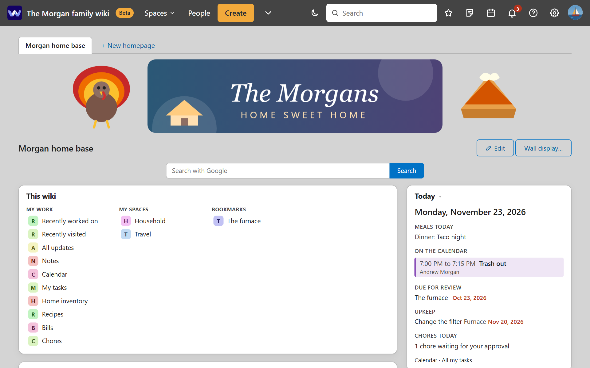
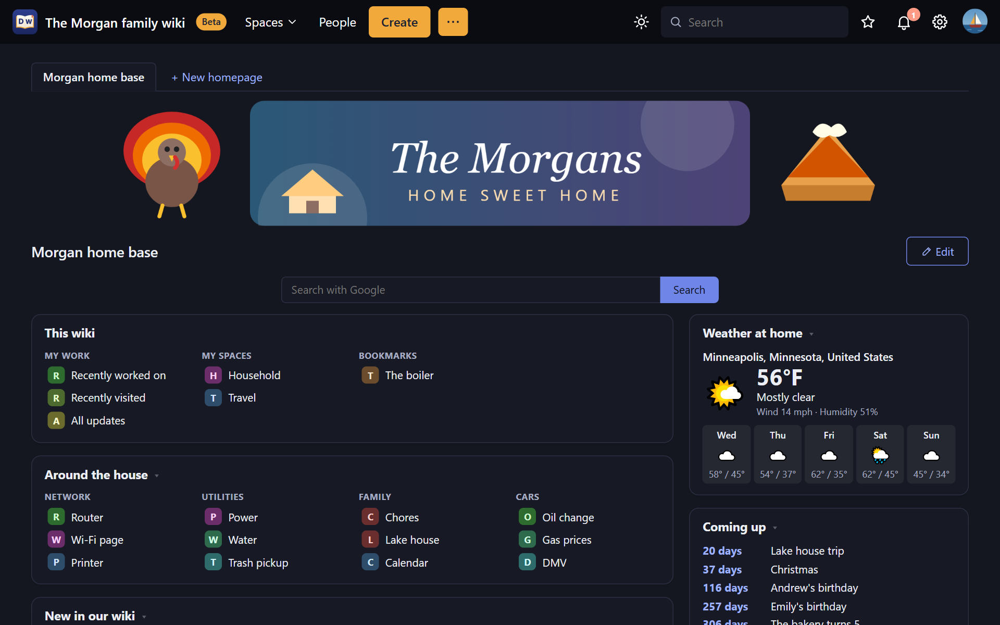

Your links, your way
Sections of links, each group with a short tag in front, in the style you like: a compact grid, a classic 2003 portal, columns of boxes, colored tiles, rounded cards, or a minimal page with a big clock and the search box. Drag things where they belong, or start from a list of popular sites.
More than links
Add a section offers more than links: the weather for a place you look up, now and five days ahead; a news feed from any site with RSS or Atom; a countdown to trips, birthdays and holidays, every year if you like; clocks in other time zones; a to-do list you tick off right on the page; a note; a picture with a link; and the latest wiki updates. Bring in the rest of DesktopWiki too: your calendar, My tasks, the pages due for review and the shopping list. The wiki fetches the weather and feeds itself, so your browser never waits on another site, and whoever sees your homepage sees only what they’re allowed to.
Your day at a glance
A Today section shows each person their own day: the date, then today’s events on every calendar they can see, in each person’s color; their tasks due today or overdue; birthdays this week; pages due for review, upkeep due on the things they look after, bills they pay by hand, and what’s for dinner; and the mentions, replies and tasks under the bell they haven’t read yet. On a day with nothing on, it says so and names the next event and the next task. Left open on a tablet, it turns to the new day just after midnight.
Templates and layouts
Start from a template, each previewed before you use it: Popular sites, Family hub, Morning news, Work desk, Student, Minimal, Desktop gadgets, Home network, Welcome banner or For a guest or babysitter, or start empty. Lay the page out in one, two or three columns, or a wide column with a narrow one beside it, across the whole window or narrower and centered. Put one of your pictures behind the page, and leave out the wiki’s top bar if you’d rather not see it there: the wiki’s logo at the top left still takes you into the wiki, to your bookmarks or wherever you choose, and a switch at the top right still flips between light and dark. Click a section’s name to fold it away until you open it again.
A message for everyone
An admin can post one message, with a last day if you like, at the top of everyone’s homepage (gear menu → Message for everyone). Each person presses Dismiss once they’ve read it, and it stays dismissed on all their devices; the page tells the admin how many have. Posting a new one shows it to everyone again. An admin’s own homepage also starts with a health line: whether the last backup failed or is more than a week old, a new DesktopWiki to install, the wiki’s drive running out of room, or simply “All well” and when the last backup was.
Wi-Fi for guests
A Wi-Fi section shows your network’s name and password and a QR code: a guest points their phone’s camera at it and they’re on. The template For a guest or babysitter starts a homepage with Wi-Fi, emergency numbers (911, poison control and lines for your own), house rules and a clock.
Quick launch
Press / on your homepage and a box opens: type a few letters of a link’s name or address, pick with the arrow keys and press Enter to open it. Type !w, !a or !g and some words to search Wikipedia, Amazon or Google instead. Esc closes it.
Is the internet up?
A Ping monitor section checks up to six addresses, Cloudflare’s 1.1.1.1 and Google’s 8.8.8.8 to begin with, every 2 to 60 seconds. It draws a live graph with a line for each, and shows each one’s latest time in green, orange or red with its average, lowest, highest and how many were lost. Add your router to see whether the trouble is at home or out on the internet. The wiki’s PC does the pinging, so a phone or tablet can show it too, and a tab you aren’t looking at stops pinging.
Gadgets like your old desktop’s
Remember the gadgets on the Windows desktop? A Clocks section can look like a digital clock, an analog one with a ticking second hand, or the date as a page torn from a calendar. The Weather can be the full report with five days ahead, or compact: the sky now, the temperature, today’s high and low and the town’s name, with a moon on a clear night. The Desktop gadgets template puts them all together with a ping monitor and your everyday sites.
A banner of words
The banner can be words in place of a picture: the wiki’s name until you type something else, such as a family motto or “Happy birthday, Mom”. Letter it in Google’s colors, harvest colors, a rainbow or pastels, a new color for each letter, or in one color or two blended, in a rounded, classic, handwritten, typewriter or poster font, small, medium or large. The editor shows it as you change it, the pictures beside the banner stay, and the words can be a link.
More than one homepage
Keep up to ten, such as one for home, one for work and one for school, each in its own tab with its own title, style, theme and who can see it. Give one a short second address, such as /start or /links. Make any of them your main one, and have the wiki’s own address open it for you; an admin can also pick a shared homepage for the wiki’s address to open for everyone.
Bring the start page you have
Import your browser's exported bookmarks, or the start page you made yourself years ago: each heading becomes a section and its links come along. Choose its file, drop it on the page, or use Import a web page and type the web address of the start page you use now; the wiki reads that page and brings in its links. Nothing is saved until you say so.
A banner for every season
Put a banner picture across the top, and pictures beside it that show on the days you choose each year, such as a tree from Christmas to New Year’s or pumpkins for Halloween. Each picture can open a link.
Search where you want it
Search Google, Bing, DuckDuckGo or the wiki, with the box at the top, under the title or at the bottom. It's ready to type in as soon as the page opens.
Save it as a web page
Import / export → Save as a web page saves your homepage as one file that opens in any browser, no wiki needed: its pictures and look are inside it, in light or dark as you see it, and its links and search box still work. Keep it as a copy, or make it the start page on a computer that isn’t on your home network. Export saves a file that imports back into a wiki, yours or another.
Your wiki on the same page
A This wiki row puts what you worked on lately, your starred spaces and your bookmarks one click away, under your own links.
A wall display
Put a spare tablet on the kitchen wall. From your homepage, Wall display makes a link for it, with a QR code to scan. The tablet shows your homepage as you see it, with your calendar, tasks and day, in large type and full screen, and nothing on it can be changed. It keeps itself up to date. When nobody has touched it for a few minutes, the pictures on a wiki page you pick fill the screen, so adding a photo to that page puts it on the wall. At night it dims to a quiet clock. Display links work only on your home network, and you can turn one off at any time.
See it for yourself
Download the free beta and open the demo wiki from setup or the tray icon: it’s this wiki, and nothing you do there is kept. See pricing for after the beta, or go back to all the features.